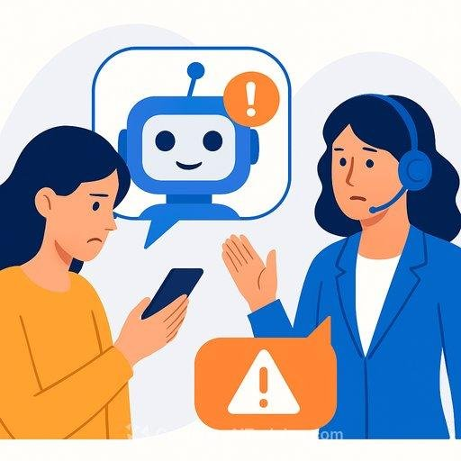

You have a problem with an order, a bank card, or a delivery. You search for help, tap a link, and a polite chat window opens right away. It answers fast, knows your issue, and asks for "a few details to verify you." That speed and politeness is what makes the fake AI customer support chat scam work.
What is the fake AI customer support chat scam?
Many real companies use chatbots, so a chatbot alone is not a red flag. The scam begins when the chat is not run by the company. Criminals copy a company's look, set up a chat that replies instantly, and use it to pull information out of you. Some use a real person behind the chat, some use an automated bot, and some switch between both.
The common ways people end up in a fake chat
| Entry point | How it looks | What the scammer wants |
|---|---|---|
| Link in an SMS or email | "Your account is on hold. Chat with support." | Login details, OTP, card number |
| Fake website copy | A site with a slightly different address and a chat widget | Anything you type into the chat or forms |
| Fake "customer care" social handle | A reply to your public complaint, from a lookalike account | To move you to chat, WhatsApp, or a call |
| Fake number in search or AI answers | A support number that is not on the official site | To get you on a call, then into screen sharing |
The part most guides skip: fake numbers inside AI answers
Security researchers and bank warnings have described a newer twist. Scammers publish fake support numbers on many web pages, hoping AI search tools will pick one up and repeat it as if it were official. Researchers have also shown that hidden instructions placed on web pages can push some AI tools to show scam numbers. This does not mean AI tools are always wrong. It means a support number shown in an AI summary is a lead to check, not a fact to trust.
Also remember that some companies do not offer phone support at all. If a company only supports customers through its app or in-app chat, any "phone support" you find is a strong warning sign.
Warning signs of a fake AI support chat
- You did not start it. You reached the chat through a link someone sent you, not through the official app or a website you opened yourself.
- It asks for secrets. Password, OTP, UPI PIN, card CVV, or full card number. Real support does not need these in a chat.
- It pushes you to move. It asks for your WhatsApp number, a phone call, or another app.
- It asks to share your screen or install a remote-access or "support" app.
- It asks for payment first to "release" a refund, unlock an account, or cancel an order.
- The address looks slightly off. Extra letters, odd endings, or a copied logo on a strange domain.
- Answers are generic or oddly off-topic, or the chat repeats the same urgent line.
- Contact details do not match the number or email on the company's real website.
Illustrative examples
These are composite examples written to show the pattern. They are not reports about real people.
How to check if a support chat is real
- Stop and leave the chat. Do not answer "just one more question."
- Open the company's official app, or type its website address yourself. Do not use the link you were sent.
- Find the support option inside the real app or site. That is the chat you can trust.
- Compare the contact details. The number, email, or chat link you were given should match the "Contact us" page on the official site.
- Test the request. Ask what information it needs. If it asks for a password, OTP, or PIN, end it.
- Call the number printed on your card or bill, if it is a bank or payment matter.
Quick red-flag self-check
Prevention tips
- Save the official apps and support pages of your bank, delivery, and shopping accounts in your phone.
- Treat unexpected "support" messages, even on social media replies, as unverified until you check on the official app.
- Never read out an OTP, even to someone who says they are from the bank.
- Do not install apps or share your screen at a stranger's request.
- Turn on alerts for card and bank transactions, so a surprise payment shows up at once.
- Use unique passwords and enable two-step verification on important accounts.
- Tell parents and elders about this scam. They are often targeted with "support" calls.
What to do if you already shared details or sent money
- Stop talking to them. Close the chat and do not answer calls from that number.
- Call your bank right away on the number on your card or official site. Ask to block the card, UPI, or account.
- If you installed an app, uninstall it, turn off the internet, and change your passwords from a safe device.
- Report it in India: call 1930 and file a complaint at cybercrime.gov.in. The sooner you report a money transfer, the better the chance of stopping it, though no one can promise recovery.
- Save evidence: screenshots of the chat, the website address, phone numbers, and payment receipts.
- Report the fake page or account to the platform it appeared on, and warn friends and family.
Conclusion
The fake AI customer support chat scam works because it appears at the exact moment you want help. A chat that is fast, friendly, and knows your problem is still not proof of anything. Start from the official app, never share an OTP or password, and treat any number found in a search or AI summary as unverified until you confirm it on the company's own site.
Similar tricks appear in other scams too. Read our guides on the WhatsApp voice note verification scam and on fake GST refund messages.
Got a message or chat link you are unsure about? Paste it into our free checker for a quick first read.
Frequently asked questions
What is a fake AI customer support chat scam?
It is a scam where criminals set up a chatbot or a human-run chat that pretends to be a company's support team. The goal is to collect your passwords, OTPs, card or bank details, or to get you to install remote-access software.
How can I tell if an AI support chat is real?
Reach the chat only from the company's official app or website, which you type or open yourself. A real support chat will not ask for your password, OTP, PIN, or full card details, and will not ask you to share your screen or install an app.
Can an AI assistant or search result give me a fake support number?
Yes, it can happen. Security researchers have reported that scammers try to plant fake support numbers online so that AI search tools repeat them. Always confirm a support number on the company's official website or app before calling.
What should I do if I shared my OTP or bank details in a support chat?
Call your bank on the number printed on your card or on its official website, block the card or account, and change your passwords. In India, call the cybercrime helpline 1930 and file a complaint at cybercrime.gov.in as soon as possible.
Do real companies use AI chatbots for support?
Yes, many do. The chatbot itself is not the problem. The risk is a fake chatbot on a copied website, a fake social media handle, or a link sent to you that you did not ask for.
Got a suspicious support chat or link you want checked?
Run it through the checker